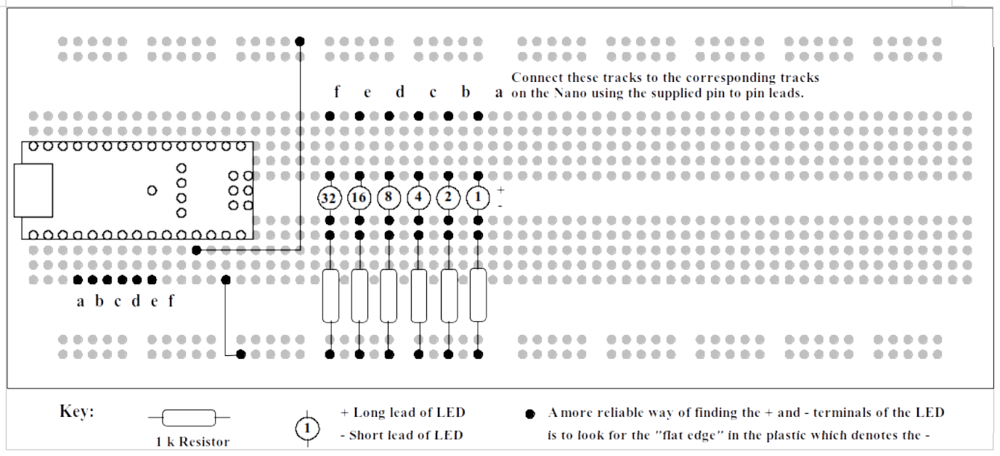
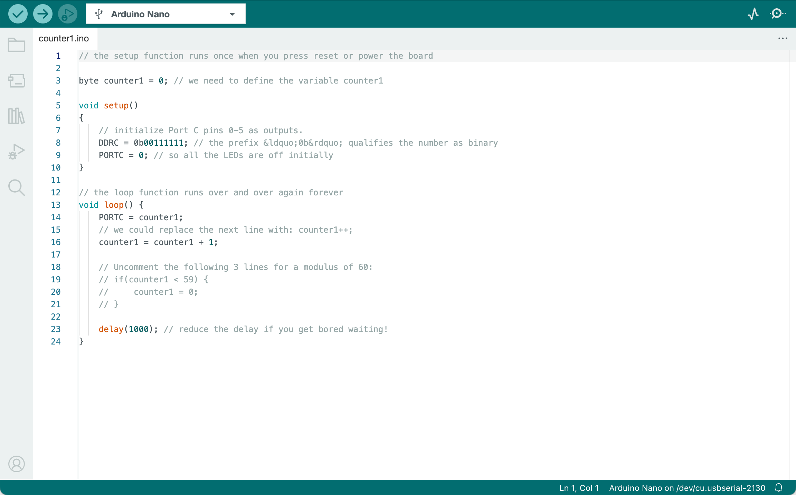
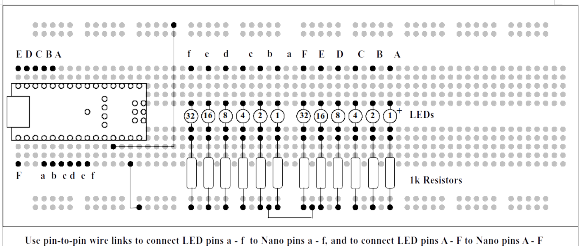
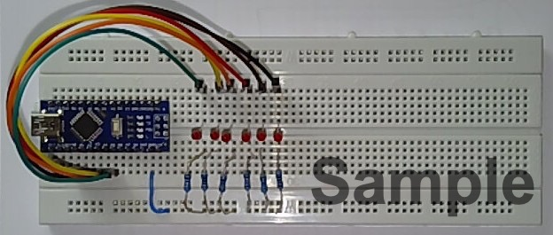
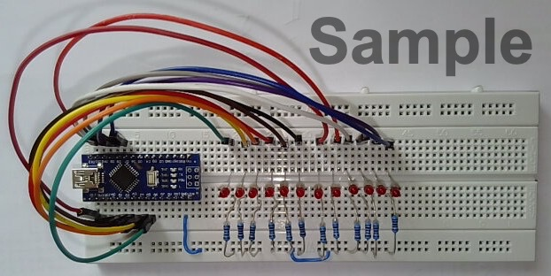

Experiment 1: Binary Counter#
How can the microcontroller make something happen?#
The microcontroller on the Nano board has a number of parallel ports, which can be used to make something happen in the world outside the plastic package. Parallel ports are usually groups of eight pins, however on the Arduino Nano not all the pins are brought out to the edge of the board. So, working within this constraint, Experiment 1 will begin with the construction and programming of a six-bit binary counter, which can count from zero to \(63\) (\(2^6 - 1\)).
Parallel ports and data direction registers#
In most microcontrollers, including the Atmel ATMega32 used in the Arduini Nano board, we set the digital poirt to be either an input or an output by setting a value in a special register, associated with the parellel port, which is called the Data Direction Register (DDR).
The DDR settings that provide the six outputs that we need for this experiment are shown in Table 16.
DDRC7 |
DDRC6 |
DDRC5 |
DDRC4 |
DDRC3 |
DDRC2 |
DDRC1 |
DDRC0 |
|---|---|---|---|---|---|---|---|
0 |
0 |
1 |
1 |
1 |
1 |
1 |
1 |
There are two ways of setting the bits in the DDR. Individual bits can be set using an Arduino specific command, pinmode. For this experiment, we shall write directly to the DDR corresponding to Port C, which is designated DDRC in our programme. In the example shown above, the top two bits of Port C will be inputs (DDRC7=0, DDRC6 = 0) and all the remaining bits will be outputs. This is a more general way of setting a DDR in different versions of embedded “C”.
Writing a number to the port register itself will cause a binary pattern to appear on the corresponding pins of the designated port, according to their binary weights. For example, bit 0 has a binary weight of \(2^0 = 1\), bit 1 has a binary weight of \(2^11 = 2\), bit 2 has a binary weight of \(2^2 = 4\), all the way up to bit 7 which has a binary weight of \(2^7 = 128\).
Method#
Construct the circuit shown in Fig. 142 using the components supplied in your laboratory kit:
{kind=link}

Fig. 142 Counter circuit.#
Our First Programme#
Now you are familiar with the Arduino IDE from running “Blink” in Getting Started, the next step is to write a new programme.
Listing 1: Basic counter shows the text of a programme which will illuminate the LEDs in a binary sequence, starting from zero (all LEDs off) to 63 (all LEDs on). Then the LEDs will go back to zero. The time it takes to count is controlled by a “time wasting” delay, using the Arduino specific command delay().
First connect your Arduino Nano board to your PC with the cable provided. Next open Arduino IDE 2 and select the connection and board as described in Initial set up. From the file menu select “New Sketch”. Press the view raw button to view the code without line numbers, copy the whole of the code given in Listing 1 and paste it into the code window of the new sketch. Save the sketch file as counter1.
Arduion IDE will close then reopen with the code for a new Sketch project called counter1.ino loaded in the code editor as shown in Fig. 142.
{kind=link}

Fig. 143 Our first program ready for testing.#
Now that the file has been entered into the computer and an Arduino sketch project it must be converted into a form the Arduino board can accept. This operation is called compilation.
Click on the icon which starts the compilation. This is the blue tick near the top of the window, also called Verify. After a few seconds, the display area at the bottom of the window should say “compilation complete”. If it does not, and some error message appears, check carefully that the programme has been entered correctly and try again.
When the programme has been compiled successfully, it must be uploaded to the Arduino. Click on the blue arrow near the top of the window, called Upload. This operation should only take a few seconds. The message “Done uploading” tells us that the upload operation has been successful, and the LEDs should start counting.
If the upload fails, there are a number of things to check. Under “tools”, there are a number of settings, e.g.
Board type:
Arduino NanoProcessor:
ATmega328PPort:
/dev/ttyUSB0(for example only; this will differ for PC and Mac)
If the above are wrong, then the upload will fail. Ask a demonstrator for help!
Let’s make a decision#
The example programme counts from zero to 255 and then back to zero, though we see the LEDs being illuminated from zero to 63 as there are only six LEDs. The counts from 64 to 127 look just the same as zero to 63! Supposing we need a counter that counts from zero to 59, and then back to zero. This is often required, for example in time-keeping programmes (60 seconds in a minute, 60 seconds in an hour). The number of count values (60 in this case) is called a Modulus.
There are several ways we can add a modulus to our counter programme. One way would be to use a “for” loop. Another way would be to make a decision. For example, if we add the following lines to the existing programme:
counter1 = counter1 + 1;
if (counter1 >= 60) {
counter1 = 0;
}
In this code, we have made a decision! If the value of the variable counter1 is increased beyond 59, then it will be set back to zero, so the LEDs never advance beyond 59.
Why bother with counts greater than 60? Well, if the programme is not properly initialised then there will be a number of false counts.
If you are not familiar with “C” programming, then you will notice that there are two kinds of “equals” in the extra line. The “greater than or equals” (>=) is a comparison and does not change any values. In other words the value of the variable counter1 is compared with the fixed value of 60. If the condition is true, then the contents of the “braces” (squiggly brackets) are executed. The single equals (=) is an assignment and forces the value of the variable to the fixed value zero.
Just to make life more interesting, in “C” there is a “double equals” ==). This can be a source of confusion when starting to program in the “C” language. It is used to compare two numbers, for example as follows:
counter1 = counter1 + 1;
if (counter1 == 60) {
counter1 = 0;
}
There are lots of “C” commands which reduce the amount of text that you have to write. For example, instead of adding 1 to the variable `counter1` we can use the *increment operator* (`++`) to increment a variable by 1:
counter1++;
This has the same effect as adding “1” to the variable counter1 and reassigning the new value to counter1 which is what:
counter1 = counter1 + 1;
does.
Let’s do it again!#
Now that we are masters of the modulus counter, let’s repeat the operation by connecting another set of LEDs to port B, and adding extra lines to the programme as shown in Listing 2: Cascaded counter.
This will require another variable, for example “counter2”.
In addition, let us increment counter1 when counter2 overflows, (changes from 59 to zero) so that one set of LEDs is counting in seconds and the other set of LEDs is counting in minutes.
Add another set of six LEDs and resistors to the Breadboard as shown in Fig. 144
{kind=link}

Fig. 144 Circuit board for a cascaded counter.#
Modify the programme to include the extra lines and compile then upload. If this is successful, then the LEDs on port B will count as far as 59 (0b0111011) and then all go out and start counting again. At the instant the LEDs on port B go out, the LEDs on port C will advance by one. So, if we have the patience, after an hour the LEDs will reach their maximum value of 59 minutes, 59 seconds (0b0111011 0b0111011) and all go out. Then the counter starts counting again from all zeros.
Let’s do it differently…#
So far we have used simple arithmetic operations such as addition to increment the variables, then compare with a fixed modulus. An alternative is to use a for(;;) loop.
Let’s look at the elements of a for(;;) loop:
for (variable = initial value; condition to be met; operation on variable) {
code to be executed in for loop;
}
A better way of understanding the for(;;) loop is to look at a practical example;
for (counter2 = 0; counter2 < 60; counter2++) {
PORTB = counter2;
delay(1000);
}
In just three lines of code, the start and end values of the loop are set up, and the increment defined, followed by the code to be executed each time around the loop. This illustrates the compact nature of the “C” language.
This for(;;) loop only executes once, so we still need to make it repeat, which is made possible by the loop function in the Arduino programme. Suppose we embed this for(;;) loop in an outer for(;;) loop, which increments a different variable and writes to a different port? Then we will have achieved the same result as the programme in Listing 2: Cascaded counter, but in a more elegant fashion:
for (counter1 = 0; counter1 < 60; counter1++) {
PORTC = counter1;
for (counter2 = 0; counter2 < 60; counter2++) {
PORTB = counter2;
delay(1000)
}
}
The “heart” of the programme is just a few lines of code!
Modify the programme as shown in Listing 3: Counter using for loop, compile and upload, and check that it really does what we expect. You may find it convenient to reduce the delay from 1000 to speed up the operation of the counters.
Assessment of Experiment 1#
Open the document you are using as a laboratory diary and add a new section “Experiment 1”.
Take a photograph of the completed breadboard, with the twelve LEDs and resistors fitted. Include in your photo some means of identification, such as your student card.
When you have finished modifying the programme to correspond with Listing 3: Counter using for loop, add some comments (preceded by the double oblique stroke “//”) and copy the text from the Arduino IDE and paste it into your laboratory diary as a code listing.
We shall be looking for comments which show your understanding of the way the nested for(;;) loop works. Why are comments so important? If someone else reads the programme, the comments aid understanding. Also, if you return to working on a programme after a couple of weeks, it is much easier to pick up where you left off. A programme without comments is incomplete!
Appendix A: Code Listings#
Listing 1: Basic counter#
View and download the code from GitHub gist counter.ino.
Listing 2: Cascaded counter#
View and download the code from GitHub gist counter2.ino.
Listing 3: Counter using for loop#
View and download the code from GitHub gist counter3.ino.
Appendix B: Photographs of Plug-in Breadboard#
The following photographs (Fig. 145 and Fig. 146) were provided by Dr Davies who created this experiment.
{kind=link}

Fig. 145 Photograph of partially wired prototype board.#
{kind=link}

Fig. 146 Photograph of completed prototype board for experiment 1.#